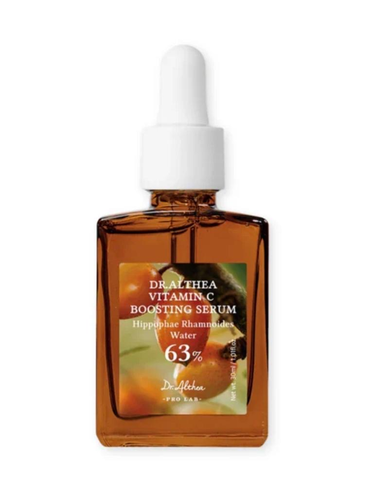

Dr. Althea Vitamin C Boosting Serum (30ML)
Descripción
Sérum facial iluminador. Revitaliza la piel desde adentro y ofrece potentes propiedades iluminadoras además de hidratación intensa. El suero está enriquecido con Agua de Hippophae Rhamnoides y Ácido Tranexámico para mejorar eficazmente un tono de piel apagado e irregular. Con un 63% de Agua de Hippophae Rhamnoides, un ingrediente natural lleno de vitamina C, proporciona poderosas propiedades iluminadoras. Al mismo tiempo, es más suave que los sueros tradicionales de vitamina C, lo que lo hace ideal para pieles sensibles.
Además, el suero está enriquecido con Agua de Hoja de Centella Asiatica y ocho tipos de ácido hialurónico, que juntos proporcionan hidratación intensa tanto en la superficie de la piel como en profundidad. También tiene un efecto calmante en la piel cansada y estresada que ha estado expuesta a tensiones externas.
Beneficios: Revitaliza la piel: Promueve el brillo natural de la piel y unifica el tono. Efectos iluminadores potentes: Contiene un 63% de Agua de Hippophae Rhamnoides, rica en vitamina C. Suave y delicado: Apto para pieles sensibles, más suave que los sueros tradicionales. Hidratación profunda: Contiene ocho tipos de ácido hialurónico. Calma la piel: El Agua de Hoja de Centella Asiatica tiene un efecto calmante. Natural y amigable con la piel: Libre de colorantes y fragancias artificiales.
Ingredientes
Hippophae Rhamnoides Water, Centella Asiatica Leaf Water, Niacinamide, Butylene Glycol, 1,2-Hexanediol, Dipropylene Glycol, WaterAqua), Methyl Gluceth-20, Methylpropanediol, Betaine, Tranexamic Acid, Glycerin, Pentylene Glycol, Propanediol, Hydroxy ethyl Urea, Laminaria Japonica Extract, Eclipta Prostrata Leaf Extract, Ficus Carica (Fig) Fruit Extract, Centella Asiatica Extract, Hydrogenated Lecithin, Sodium Hyalu ronate, Carbomer, 3-0-Ethyl Ascorbic Acid, C12-14 Pa reth-12, Ammonium Acryloyldimethyltaurate/VP Copo lymer, Xanthan Gum, Tromethamine, Panthenol, Ethyl hexylglycerin, Adenosine, Disodium EDTA, Fructooligo saccharides, Beta-Glucan, Ascorbic Acid, Hydrolyzed Hyaluronic Acid, Ceramide NP, Alpha-Arbutin, Tocophe rol, Bifida Ferment Lysate, Bisabolol, Ubiquinone, Hydro xydecyl Ubiquinone, Sodium Acetylated Hyaluronate.